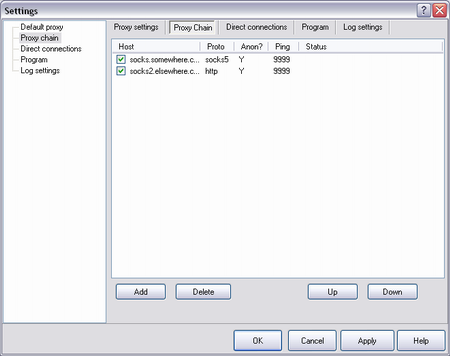
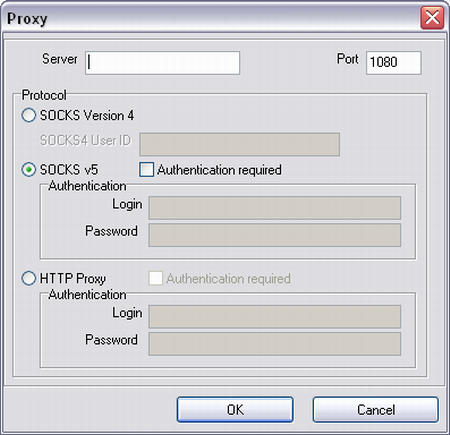

|
Proxy Ketten sind ein fortgeschrittenes Werkzeug um die Arbeit der "men in black" zu erschweren. :)
|

| Host | Hostname/IP des Proxy |
| Proto | Protokoll. SOCKS4, SOCKS5 oder HTTP |
| Anon | Anonym (Y) oder nicht (N). |
| Ping | Ping zum Proxy. Um den Ping zu überprüfen wählen Sie "Ping proxy" aus dem Kontextmenü |
| Status | Status des Proxy. "OK" bedeutet daß der Proxy antwortet |
|
|
FreeCap führt keine volle Überprüfung des Proxies durch, das heißt die Einstellung von "proto" und "anon" muß manuell vorgenommen werden.
|
|
Neuen Proxy hinzufügen:

Diese Felder sind gleich wie hier Default Proxy tab.
|